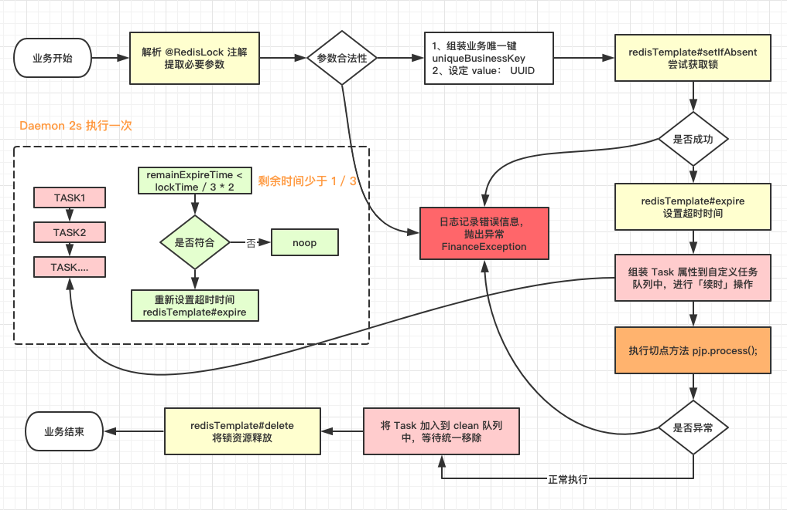

一、业务背景
有些业务请求，属于耗时操作，需要加锁，防止后续的并发操作，同时对数据库的数据进行操作，需要避免对之前的业务造成影响。
二、分析流程
使用 Redis 作为分布式锁，将锁的状态放到 Redis 统一维护，解决集群中单机 JVM 信息不互通的问题，规定操作顺序，保护用户的数据正确。
梳理设计流程
- 新建注解 @interface，在注解里设定入参标志
- 增加 AOP 切点，扫描特定注解
- 建立 @Aspect 切面任务，注册 bean 和拦截特定方法
- 特定方法参数 ProceedingJoinPoint，对方法 pjp.proceed() 前后进行拦截
- 切点前进行加锁，任务执行后进行删除 key
核心步骤：加锁、解锁和续时
加锁
使用了 RedisTemplate 的 opsForValue.setIfAbsent 方法，判断是否有 key，设定一个随机数 UUID.random().toString，生成一个随机数作为 value。
从 redis 中获取锁之后，对 key 设定 expire 失效时间，到期后自动释放锁。
按照这种设计，只有第一个成功设定 Key 的请求，才能进行后续的数据操作，后续其它请求由于无法获得🔐资源，将会失败结束。
超时问题
担心 pjp.proceed() 切点执行的方法太耗时，导致 Redis 中的 key 由于超时提前释放了。
例如，线程 A 先获取锁，proceed 方法耗时，超过了锁超时时间，到期释放了锁，这时另一个线程 B 成功获取 Redis 锁，两个线程同时对同一批数据进行操作，导致数据不准确。
解决方案：增加一个「续时」
任务不完成，锁不释放：
维护了一个定时线程池 ScheduledExecutorService，每隔 2s 去扫描加入队列中的 Task，判断是否失效时间是否快到了，公式为：【失效时间】<= 【当前时间】+【失效间隔（三分之一超时）】
/**
* 线程池，每个 JVM 使用一个线程去维护 keyAliveTime，定时执行 runnable
*/
private static final ScheduledExecutorService SCHEDULER =
new ScheduledThreadPoolExecutor(1,
new BasicThreadFactory.Builder().namingPattern("redisLock-schedule-pool").daemon(true).build());
static {
SCHEDULER.scheduleAtFixedRate(() -> {
// do something to extend time
}, 0, 2, TimeUnit.SECONDS);
}三、设计方案
经过上面的分析，小何设计出了这个方案：

前面已经说了整体流程，这里强调一下几个核心步骤：
- 拦截注解 @RedisLock，获取必要的参数
- 加锁操作
- 续时操作
- 结束业务，释放锁
四、实操
之前也有整理过 AOP 使用方法，可以参考一下
相关属性类配置
业务属性枚举设定
public enum RedisLockTypeEnum {
/**
* 自定义 key 前缀
*/
ONE("Business1", "Test1"),
TWO("Business2", "Test2");
private String code;
private String desc;
RedisLockTypeEnum(String code, String desc) {
this.code = code;
this.desc = desc;
}
public String getCode() {
return code;
}
public String getDesc() {
return desc;
}
public String getUniqueKey(String key) {
return String.format("%s:%s", this.getCode(), key);
}
}任务队列保存参数
public class RedisLockDefinitionHolder {
/**
* 业务唯一 key
*/
private String businessKey;
/**
* 加锁时间 (秒 s)
*/
private Long lockTime;
/**
* 上次更新时间（ms）
*/
private Long lastModifyTime;
/**
* 保存当前线程
*/
private Thread currentTread;
/**
* 总共尝试次数
*/
private int tryCount;
/**
* 当前尝试次数
*/
private int currentCount;
/**
* 更新的时间周期（毫秒）,公式 = 加锁时间（转成毫秒） / 3
*/
private Long modifyPeriod;
public RedisLockDefinitionHolder(String businessKey, Long lockTime, Long lastModifyTime, Thread currentTread, int tryCount) {
this.businessKey = businessKey;
this.lockTime = lockTime;
this.lastModifyTime = lastModifyTime;
this.currentTread = currentTread;
this.tryCount = tryCount;
this.modifyPeriod = lockTime * 1000 / 3;
}
}设定被拦截的注解名字
@Retention(RetentionPolicy.RUNTIME)
@Target({ElementType.METHOD, ElementType.TYPE})
public @interface RedisLockAnnotation {
/**
* 特定参数识别，默认取第 0 个下标
*/
int lockFiled() default 0;
/**
* 超时重试次数
*/
int tryCount() default 3;
/**
* 自定义加锁类型
*/
RedisLockTypeEnum typeEnum();
/**
* 释放时间，秒 s 单位
*/
long lockTime() default 30;
}核心切面拦截的操作
RedisLockAspect.java 该类分成三部分来描述具体作用
Pointcut 设定
/**
* @annotation 中的路径表示拦截特定注解
*/
@Pointcut("@annotation(cn.sevenyuan.demo.aop.lock.RedisLockAnnotation)")
public void redisLockPC() {
}Around 前后进行加锁和释放锁
前面步骤定义了我们想要拦截的切点，下一步就是在切点前后做一些自定义操作：
@Around(value = "redisLockPC()")
public Object around(ProceedingJoinPoint pjp) throws Throwable {
// 解析参数
Method method = resolveMethod(pjp);
RedisLockAnnotation annotation = method.getAnnotation(RedisLockAnnotation.class);
RedisLockTypeEnum typeEnum = annotation.typeEnum();
Object[] params = pjp.getArgs();
String ukString = params[annotation.lockFiled()].toString();
// 省略很多参数校验和判空
String businessKey = typeEnum.getUniqueKey(ukString);
String uniqueValue = UUID.randomUUID().toString();
// 加锁
Object result = null;
try {
boolean isSuccess = redisTemplate.opsForValue().setIfAbsent(businessKey, uniqueValue);
if (!isSuccess) {
throw new Exception("You can't do it，because another has get the lock =-=");
}
redisTemplate.expire(businessKey, annotation.lockTime(), TimeUnit.SECONDS);
Thread currentThread = Thread.currentThread();
// 将本次 Task 信息加入「延时」队列中
holderList.add(new RedisLockDefinitionHolder(businessKey, annotation.lockTime(), System.currentTimeMillis(),
currentThread, annotation.tryCount()));
// 执行业务操作
result = pjp.proceed();
// 线程被中断，抛出异常，中断此次请求
if (currentThread.isInterrupted()) {
throw new InterruptedException("You had been interrupted =-=");
}
} catch (InterruptedException e ) {
log.error("Interrupt exception, rollback transaction", e);
throw new Exception("Interrupt exception, please send request again");
} catch (Exception e) {
log.error("has some error, please check again", e);
} finally {
// 请求结束后，强制删掉 key，释放锁
redisTemplate.delete(businessKey);
log.info("release the lock, businessKey is [" + businessKey + "]");
}
return result;
}上述流程简单总结一下：
- 解析注解参数，获取注解值和方法上的参数值
- redis 加锁并且设置超时时间
- 将本次 Task 信息加入「延时」队列中，进行续时，方式提前释放锁
- 加了一个线程中断标志
- 结束请求，finally 中释放锁
续时操作
这里用了 ScheduledExecutorService，维护了一个线程，不断对任务队列中的任务进行判断和延长超时时间：
// 扫描的任务队列
private static ConcurrentLinkedQueue<RedisLockDefinitionHolder> holderList = new ConcurrentLinkedQueue();
/**
* 线程池，维护keyAliveTime
*/
private static final ScheduledExecutorService SCHEDULER = new ScheduledThreadPoolExecutor(1,
new BasicThreadFactory.Builder().namingPattern("redisLock-schedule-pool").daemon(true).build());
{
// 两秒执行一次「续时」操作
SCHEDULER.scheduleAtFixedRate(() -> {
// 这里记得加 try-catch，否者报错后定时任务将不会再执行=-=
Iterator<RedisLockDefinitionHolder> iterator = holderList.iterator();
while (iterator.hasNext()) {
RedisLockDefinitionHolder holder = iterator.next();
// 判空
if (holder == null) {
iterator.remove();
continue;
}
// 判断 key 是否还有效，无效的话进行移除
if (redisTemplate.opsForValue().get(holder.getBusinessKey()) == null) {
iterator.remove();
continue;
}
// 超时重试次数，超过时给线程设定中断
if (holder.getCurrentCount() > holder.getTryCount()) {
holder.getCurrentTread().interrupt();
iterator.remove();
continue;
}
// 判断是否进入最后三分之一时间
long curTime = System.currentTimeMillis();
boolean shouldExtend = (holder.getLastModifyTime() + holder.getModifyPeriod()) <= curTime;
if (shouldExtend) {
holder.setLastModifyTime(curTime);
redisTemplate.expire(holder.getBusinessKey(), holder.getLockTime(), TimeUnit.SECONDS);
log.info("businessKey : [" + holder.getBusinessKey() + "], try count : " + holder.getCurrentCount());
holder.setCurrentCount(holder.getCurrentCount() + 1);
}
}
}, 0, 2, TimeUnit.SECONDS);
}这段代码，用来实现设计图中虚线框的思想，避免一个请求十分耗时，导致提前释放了锁。
这里加了「线程中断」Thread#interrupt，希望超过重试次数后，能让线程中断（未经严谨测试，仅供参考哈哈哈哈）
不过建议如果遇到这么耗时的请求，还是能够从根源上查找，分析耗时路径，进行业务优化或其它处理，避免这些耗时操作。
所以记得多打点 Log，分析问题时可以更快一点。如何使用SpringBoot AOP 记录操作日志、异常日志？
五、开始测试
在一个入口方法中，使用该注解，然后在业务中模拟耗时请求，使用了 Thread#sleep
@GetMapping("/testRedisLock")
@RedisLockAnnotation(typeEnum = RedisLockTypeEnum.ONE, lockTime = 3)
public Book testRedisLock(@RequestParam("userId") Long userId) {
try {
log.info("睡眠执行前");
Thread.sleep(10000);
log.info("睡眠执行后");
} catch (Exception e) {
// log error
log.info("has some error", e);
}
return null;
}使用时，在方法上添加该注解，然后设定相应参数即可，根据 typeEnum 可以区分多种业务，限制该业务被同时操作。
测试结果：
2021-01-04 14:55:50.864 INFO 9326 --- [nio-8081-exec-1] c.s.demo.controller.BookController : 睡眠执行前
2021-01-04 14:55:52.855 INFO 9326 --- [k-schedule-pool] c.s.demo.aop.lock.RedisLockAspect : businessKey : [Business1:1024], try count : 0
2021-01-04 14:55:54.851 INFO 9326 --- [k-schedule-pool] c.s.demo.aop.lock.RedisLockAspect : businessKey : [Business1:1024], try count : 1
2021-01-04 14:55:56.851 INFO 9326 --- [k-schedule-pool] c.s.demo.aop.lock.RedisLockAspect : businessKey : [Business1:1024], try count : 2
2021-01-04 14:55:58.852 INFO 9326 --- [k-schedule-pool] c.s.demo.aop.lock.RedisLockAspect : businessKey : [Business1:1024], try count : 3
2021-01-04 14:56:00.857 INFO 9326 --- [nio-8081-exec-1] c.s.demo.controller.BookController : has some error
java.lang.InterruptedException: sleep interrupted
at java.lang.Thread.sleep(Native Method) [na:1.8.0_221]我这里测试的是重试次数过多，失败的场景，如果减少睡眠时间，就能让业务正常执行。
如果同时请求，你将会发现以下错误信息：
2021-01-04 14:58:00.857 INFO 9326 --- [nio-8081-exec-9] c.s.demo.aop.lock.RedisLockAspect : has some error,please check again
java.lang.Exception: You can't do it,because another has get the lock =-=表示我们的锁🔐的确生效了，避免了重复请求。
六、总结
对于耗时业务和核心数据，不能让重复的请求同时操作数据，避免数据的不正确，所以要使用分布式锁来对它们进行保护。
再来梳理一下设计流程：
- 新建注解 @interface，在注解里设定入参标志
- 增加 AOP 切点，扫描特定注解
- 建立 @Aspect 切面任务，注册 bean 和拦截特定方法
- 特定方法参数 ProceedingJoinPoint，对方法 pjp.proceed() 前后进行拦截
- 切点前进行加锁，任务执行后进行删除 key
本次学习是通过 测试小姐姐 对操作进行并发测试，从中引申出分布式锁的概念和具体实现，然后写了一份简化版的业务处理。对于之前没考虑到的「续时」操作，这里使用了守护线程来定时判断和延长超时时间，避免了锁提前释放。
于是乎，同时回顾了三个知识点：
1、AOP 的实现和常用方法
2、定时线程池 ScheduledExecutorService 的使用和参数含义
3、线程 Thread#interrupt 的含义以及用法（这个挺有意思的，可以深入再学习一下）
具体代码放在了之前学习 SpringBoot 的项目中，感兴趣的可以克隆一下，使用这个 Redis 🔐